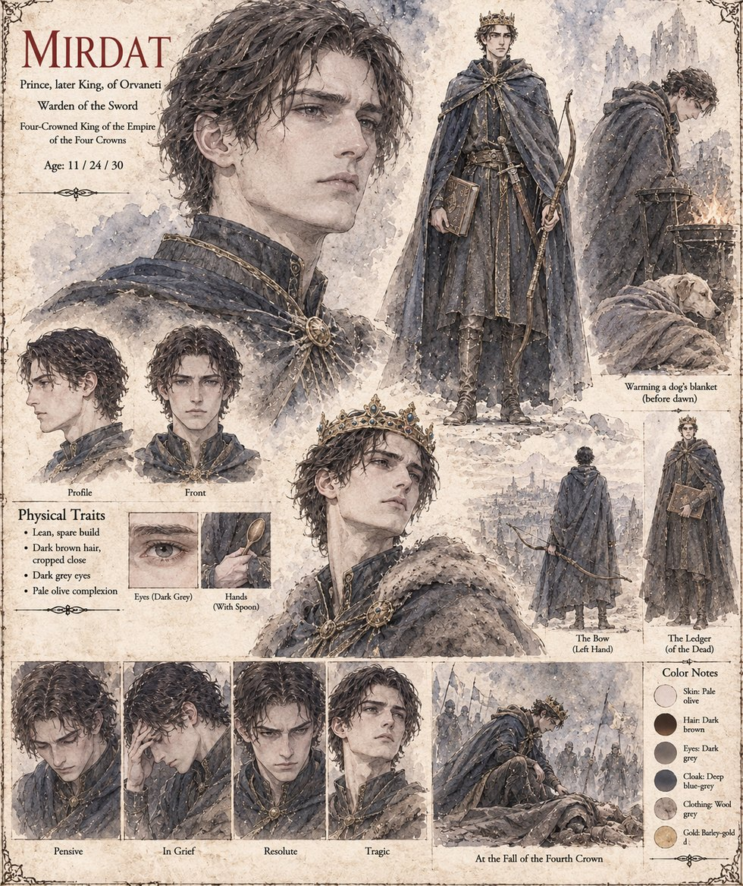

Mirdat
Prince, later King, of Orvaneti · Warden of the Sword · the Four-Crowned King · 11, 24 and 30
Eleven years old in the year the sky was kind: the loveliest autumn of his life, gold from the first week of Iverin, and a winter barley that was sown into dry ground and never came. The Hierarch of Auron announces from the temple steps at Samaghvto that the Father has found the lowland realm short in its measures, and King Orvan, who has never refused anyone, pays the tribute twice, sends the Hall three hundred beams, and weeps before his council. Mirdat watches, with his mother’s small wooden spoon in his fist, and it occurs to him, in the cold, clear, unhurried way that things occur to children who are about to become something, that nobody in the room has thought to ask what the rain had been doing instead. He grows into a lean, silent, exacting young man who counted: the sacks in the royal granary, by lamplight, on every Uncounted Day, and the loaves in any bakery he passed, as other men count the steps of a staircase, in the private theory that if he could only make the sums come out right the sky would be satisfied. It is possible to love one’s people through arithmetic. It is not recommended. At seventeen he serves two years in the Sword’s garrison at Samaghvto, standing guard in the Hall of the Unstrung Bow under the open sky, learns the Council by heart, and meets a mastiff pup that follows him in the manner of a debt. He names it Lomi, the old word for lion, and on every night that he orders men to their deaths he warms its blanket at the brazier before dawn with his own hands, the only act of his day that he did not enter in any ledger.
He is crowned at twenty-four, and in the spring of the twenty-ninth year rides to Samaghvto with his cap in his hands, because a petitioner of Orvaneti does not sit, and asks for rain with the plain dignity of a man whose speech has come down to a number: six hundred thousand people, four dry springs in ten years, a granary at two-fifths. He asked, in effect, to be allowed to pay. The Council votes six and six; the thirteenth chair casts the voice; and at Gurgen’s suggestion the one who asks is the one who draws. An hour before the shot Ketevan finds him in the court and says her one sentence: “Think of one field, Majesty,” she says. “Only one.” “I will try,” he says, and means it; he will remember in the last hour of his life that he meant it, the single fact of the entire affair that he was never able to forgive. He pictures a plot of barley on the east bank of the Ladzhura with a boundary ditch and a single thorn tree, the field where his mother knelt in the first spring of his life to show him how to sow, and then, as a picture does in the mind of a man who has not slept in a fortnight and is carrying a kingdom, it widens, until every field a hungry child had ever stood beside was under it, and out of a grief larger than the arithmetic of any field a thought arrives of its own accord, Enough rain that no child ever starves. He sets it to nine days, because nine seems about enough. It rains for nine days over the whole plain; the Ladzhura rises eleven feet in a night and takes four hundred and six people who had been waiting for the rain with their doors open, and he rides into the flood on the fourth day with his hood thrown back, weeping, and is thought by all of them to be rejoicing. He had asked for enough. He had not been asked, and had not thought, to specify the amount.
The rest is arithmetic he learns one arrow at a time. In the long night over the Memorandum, with the dog’s weight on his boot, he understands Ketevan, and it was almost worse, and concludes that a sky nobody keeps the books on will be kept badly, that a ledger kept by thirteen who each believe it belongs to a god will be kept worst of all, and that the only remedy for a debt that falls on whoever is downhill is to place the account in one pair of honest hands. He did not think the words my own. He thought, simply, one. He sends General Guaram for a thief, and then he is disciplined. With Orsani’s arrow he plans a small hail, the size of a thumbnail, for a hundred heartbeats, and a day from his ninth year, his father on his knees weeping in an orchard of shredded plums, comes up through the picture, and three thousand one hundred die in eleven minutes, Shio among them. With Mesvana’s he lays a fog along the pass of Dzaleti for six hours and takes the tower without a blow, and six hundred and forty are dead of it, each of whom he enters in his own hand in a book he keeps for the purpose. With the Son’s he is exact in the Bakviri gorge, to the gorge alone, and to the length of two hours, and nineteen hundred die, tower excepted. With Bakviri’s own he lays a thin snow on Ormeli for ten days to bring its Warden down the mountain, and two hundred and eleven die of it. He is crowned the Four-Crowned King on the Uncounted Day at the end of the thirty-first year, asking for the loveliest weather he knew, and the formula that closes the rite lengthens his picture from a day to a reign. The Unclouded Year is golden for three months and then a famine; he sends his own portion down to the yard door, as his mother had, and manages the dying as a man manages a fire in a house he has set himself: with great energy, and by not looking at the match. Lomi dies in Garren, at eleven, on the floor of the throne room, and the king gets down from the throne in front of his generals and wets the blanket for the first time in eleven years. Three letters from Ormeli do not reach him.
On the second of Averin in the thirty-third year, in the Hall, he lays the crown on the slab and declares his reign ended. Nothing happens. He takes up the bow, and there is no arrow in the world to wake it, but the slow pulse in the grip rises under his palm and settles to his own. He did not call it a method. He called it a sum with one term; the physicians call what happens to him a wasting. Ketevan comes in nine days on the post’s relay horses, sixty-four years old, and finds him under a thin grey blanket that has been warmed over a brazier from the habit of the household, with the wooden spoon beside his hand. “I only asked for fair weather,” he says. “Then why did the sky obey me?” “It obeys everyone,” she says. “That has always been the difficulty. It was never listening to the crown. It was listening to your hand.” He laughs once, a dry small sound like a latch. She tells him of her daughter, and he does not say that he is sorry, which was the more accurate response. He puts the spoon in her hand and asks her to give it to the kitchens; she does, and it is there still, in a drawer among the ladles, and nobody knows what it is for. He dies on the night of the twenty-first of Averin, at the age of thirty. The rain begins at dawn. The ledger he leaves, in two columns, the arrows and the dead, is read twice by General Guaram, standing, and burned in the brazier that had warmed a dog’s blanket for eleven years.
The manuscript gives his three ages (eleven, twenty-four, thirty), his lean, silent, exacting nature, the spoon, the dog, the counting and everything above. The sheet’s lean, spare build, cropped dark brown hair, dark grey eyes, pale olive complexion, deep blue-grey cloak fastened with a gold brooch, plain crown and tall boots are its own, as are its panels Pensive, In Grief, Resolute and Tragic. Its details Hands (With Spoon), The Bow (Left Hand) and The Ledger (of the Dead) and its scene Warming a dog’s blanket (before dawn) follow the manuscript; At the Fall of the Fourth Crown, which shows him kneeling over a fallen figure before an army, is the sheet’s own.
“I only asked for fair weather.”
Appears In

Related Subjects


Related Records

In the palace kitchens at Dzirvali, Tinatin, the tall, laughing queen who keeps a small wooden spoon in her sleeve, stands each morning among the children who come for the broth and takes the smallest ladle. She dies in the first week of Averin of the fourteenth year, and her son Mirdat, eleven that year, is left with the spoon.

On the ninth of Carren in the twenty-ninth year, Mirdat stands before the Council of the Quiver in the open court with his cap in his hands, because a petitioner of Orvaneti does not sit, and asks for rain. Sandro counts the stones twice and reads the figure aloud, six and six; the bow on its slab appears to grow warmer, and every head in the horseshoe turns to the thirteenth chair, where Ketevan, with her ledger on her knee, says “Yes” in a voice that does not carry beyond the second row.

On the twenty-eighth of Iverin in the twenty-ninth year, Mirdat stands on the high wall above the Hall’s gate with the bow in his left hand, Orsani’s arrow in his right and Lomi against his knee, and watches the herald Shio come up the Wine Road. He has read the demand in the young man’s walk and knows that it would be reasonable, and knows that he cannot afford to consider it.